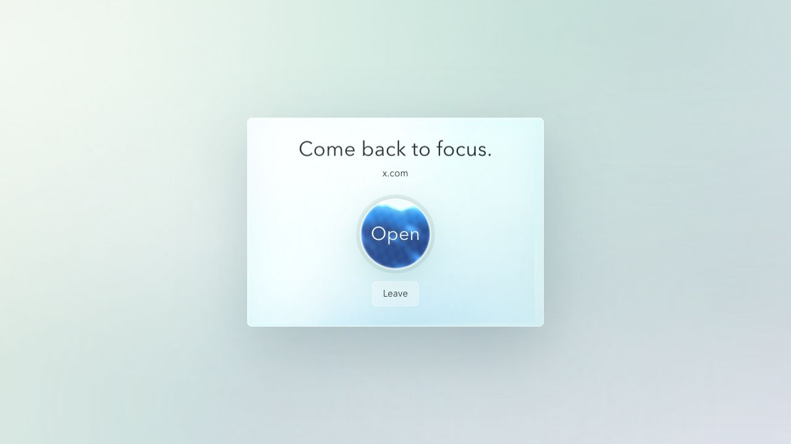
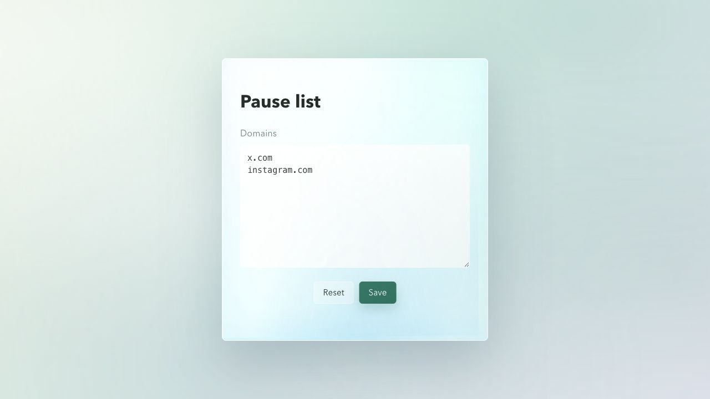

01
Three seconds
A short delay makes the choice visible before the page opens.
02
Your domains
Add the sites where a pause helps. Subdomains are included.
03
Local-first
Plain Manifest V3 files with settings stored by Chrome sync.
Install unpacked
- Clone or download the repository.
- Open
chrome://extensions. - Enable
Developer mode. - Choose
Load unpackedand select the project folder.
